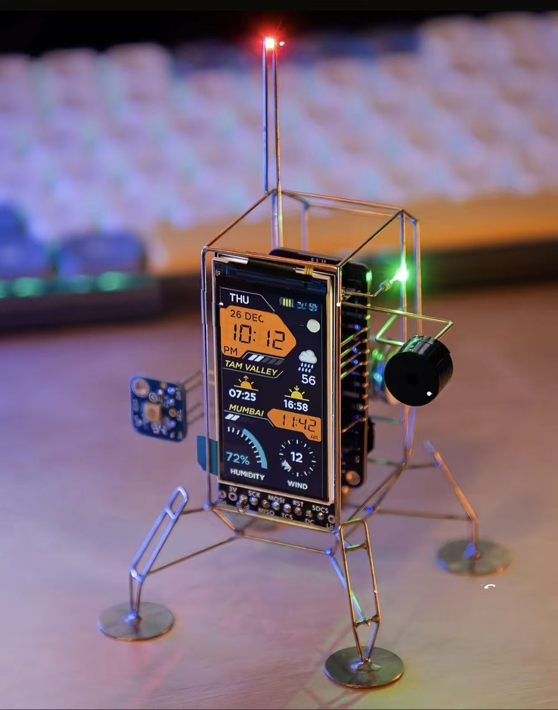

家里的电池会说「能撑 4 小时」「省 47 元」，但从不告诉你这两个数字有多不可靠。 台风天备电撑不住，损失是你的，不是算法的。 用户不敢交出控制权，是理性的。
知止持续自评「我有多确定」，用这个自评决定自己当前的权限等级， 并在每一次降级时留下可校验的凭据。

系统自评预测、数据、决策三类置信度，作为唯一自动判据决定 L0–L3 权限。 价格冲击实测：置信度 65% → 43%，等级 L3 → L1，降级原因全程可查。
所有结论按 P10/P50/P90 输出：续航 3.7 小时（P50），最差 2.3 小时（P10）。 区间宽度同时是输出、输入与判据：越不准越宽，越宽越降级。
「明天全天不用电网的电」做不到。系统给出最小冲突集与三条替代路径， 代价算到小数点后：接受 5.14 kWh 最低价取电，约 0.88 元。
| 场景 | 成本 | 买到了什么 |
|---|---|---|
| 正常天气 | +1.33 元 | 悲观世界电费反而低 0.37 元 |
| 连阴三天 | +0.97 元 | 峰段取电减少 0.87 kWh |
| 台风预警 | +4.86 元 | 备电违约下降 99% |
保费随不确定性变化：预报可信时接近零，台风预警才花钱。代价（峰段多买 5.78 kWh）同样列在材料里。
cd zhizhi && .venv/Scripts/python -m zhizhi.cli demo --act all
.venv/Scripts/python -m zhizhi.cli audit verify # 审计哈希链校验